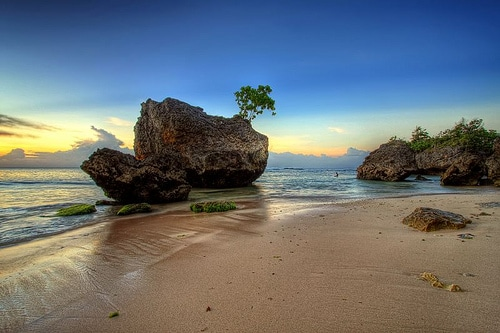

Selamat Datang di Website Wisata dan Oleh-oleh Bali
Temukan tempat wisata terbaik dan Oleh-Oleh di bali
Temukan tempat wisata terbaik dan Oleh-Oleh di bali
Explore tempat-tempat wisata menarik di daerah kami.
Danau batur kintamani merupakan salah satu pesona alam tiada duannya yang di miliki bali.Terletak di gunung tertinggi ke 2 di bali,Danau batur kintamani mempunyai hawa yang sejuk dan pemandangan yang sangat mempesona
Pantai karma atau pantai pasir putih merupakan pantai pribadi yang letaknya di dasar tebing,tempat wisata di bali yang terletak 27 km dari denpasar.
.jpg)
Belanja produk-produk unggulan di toko kami.
Salah satu cokelat yang bisa dibeli saat berada di sana adalah Heavenly Chocolate Bali. Varian rasa cokelatnya beragam dan dibagi dalam kategori alkohol dan non-alkohol. Untuk kategori alkohol, kamu bisa coba rasa Rum dan Baileys. Sementara untuk kategori non-alkohol, beberapa rasa yang tersedia adalah Dark, Matcha, Milk Caramel, dan Taro.
Pia Kukus Made Bali merupakan toko pertama yang menjual makanan tersebut. Oleh-oleh kekinian ini bisa didapatkan di outlet resminya di Mall Bali Galeria, Jalan Bypass Ngurah Rai, Kuta. Selain itu, pia kukus juga bisa dibeli di Krisna Oleh Oleh Bali, Agung Bali Oleh Oleh Khas Bali, dan The Keranjang.
Kacang disco merupakan salah satu camilan yang cocok untuk dijadikan kudapan saat menonton film. Makanan ini dijual di toko oleh-oleh dan mudah dicari. Berbagai rasa bisa ditemukan saat belanja kacang disco. Mulai dari pedas, keju, hingga campuran pedas manis.